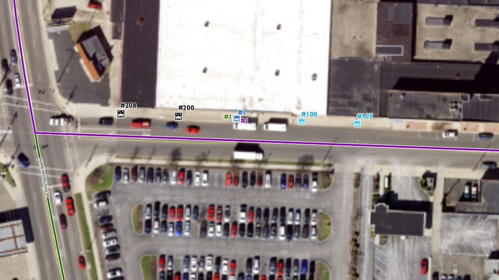
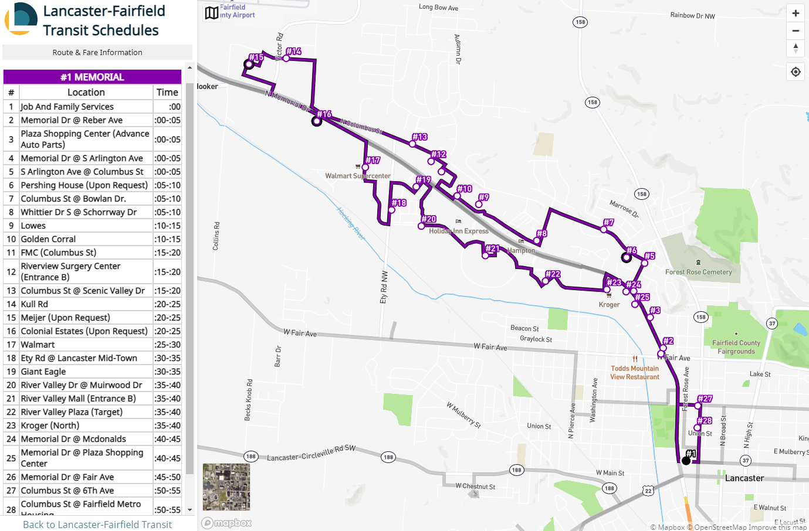
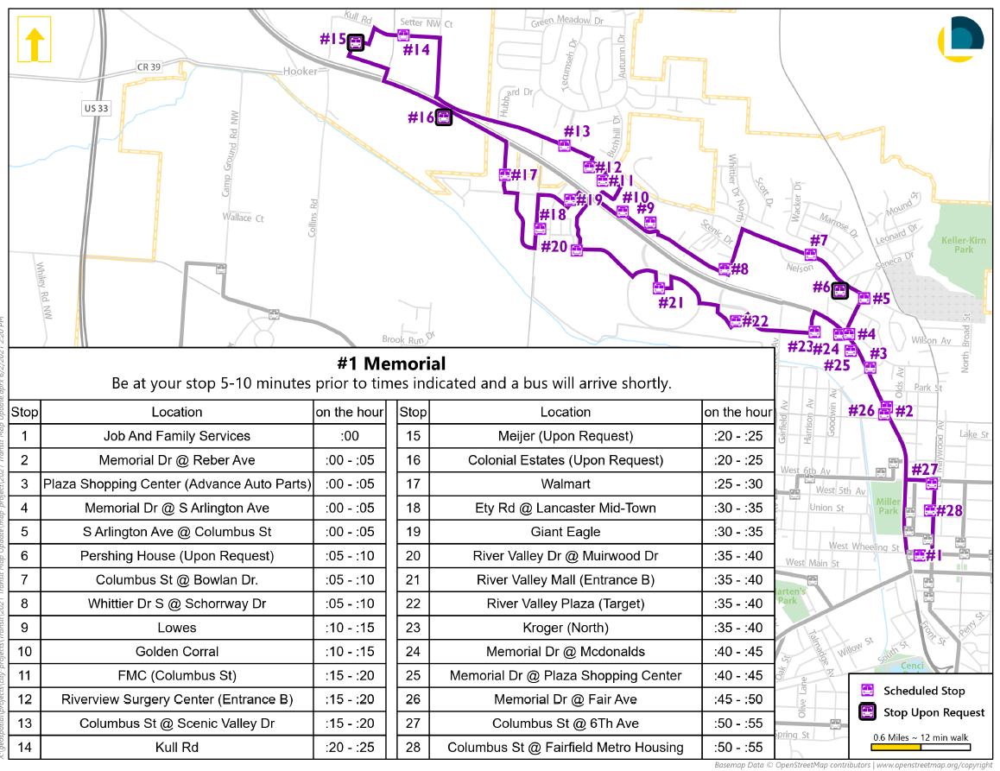
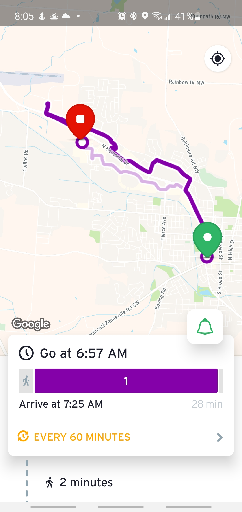

## Moving from Excel to Google Maps:
**Transit Data and an Introduction to GTFS**
Malcolm Meyer
2021 Ohio GIS Conference
---
## What is Wisdom
> [The goal is] not to develop full confidence in everything you do, but to become confident in the fact that you probably don’t know what you’re doing.
[~ Mark Manson, 2021](https://markmanson.net/newsletters/mindfck-monthly-92)
---
# What is GTFS?
---
> The General Transit Feed Specification (GTFS) is a data specification that allows public transit agencies to publish their transit data in a format that can be consumed by a wide variety of software applications. Today, the GTFS data format is used by thousands of public transport providers.
---

---
# The Static Feed
---
> A GTFS feed, which contains static transit information, is composed of a number of text (.txt) files that are contained in a single ZIP file. Each file describes a particular aspect of transit information: stops, routes, trips, fares, etc.
---
Required Tables
|Filename|Required|Description|
|-|-|-|
|agency.txt |Required |Transit agencies|
|stops.txt |Required |Transit Stops and stations|
|routes.txt |Required |Transit routes and loops|
|trips.txt |Required |Specific schedule per route|
|stop_times.txt |Required| Arrival and deaprture times|
|calendar.txt |Conditional|Weekly Scheudle|
|calendar_dates.txt |Conditional|Schedule Exceptions|
---
## Existing Data
- Stops (Points) stops.txt
- Routes (Lines) routes.txt
---

---
## Manually Create Tables
|Filename|Required|Description|
|-|-|-|
|*agency.txt* |Required |Transit agencies|
|stops.txt |Required |Transit Stops and stations|
|routes.txt |Required |Transit routes and loops|
|trips.txt |Required |Specific schedule per route|
|stop_times.txt |Required| Arrival and deaprture times|
|*calendar.txt* |Conditional|Weekly Scheudle|
|*calendar_dates.txt* |Conditional|Schedule Exceptions|
---
agency.txt
|agency_name|agency_url|agency_timezone|agency_lang|agency_phone|
|-|-|-|-|-|
|Lancaster-Fairfield Public Transit System|https://www.ci.lancaster.oh.us/242/Transit|America/New_York|en|7406815086|
---
calendar.txt
|service_id|monday|tuesday|wednesday|thursday|friday|saturday|sunday|start_date|end_date|
|-|-|-|-|-|-|-|-|-|-|
|1|1|1|1|1|1|0|0|20210101|20220101|
|2|1|1|1|1|0|0|0|20210101|20220101|
---
calendar_dates.txt
|service_id|date|exception_type|
|-|-|-|
|1|20211231|2|
|1|20210331|2|
|1|20210704|2|
|1|20211006|2|
|1|20211125|2|
|1|20211224|2|
|2|20211231|2|
|2|20210331|2|
|2|20210704|2|
|2|20211006|2|
|2|20211125|2|
|2|20211224|2|
---
## Routes, Stops & Trips
> How can we create these required tables from our exiting GIS data?
- [Excel Tool from National RTAP](https://www.nationalrtap.org/Technology-Tools/GTFS-Builder)
- Custom NodeJS Script
---
## NodeJS Scripted Tables
|Filename|Required|Description|
|-|-|-|
|agency.txt |Required |Transit agencies|
|*stops.txt* |Required |Transit Stops and stations|
|*routes.txt* |Required |Transit routes and loops|
|*trips.txt* |Required |Specific schedule per route|
|*stop_times.txt* |Required| Arrival and deaprture times|
|calendar.txt |Conditional|Weekly Scheudle|
|calendar_dates.txt |Conditional|Schedule Exceptions|
---
## NodeJS Script
- Load the manually created files
- Convert existing data to GeoJSON and load into NodeJS
- Iterate through all the routes and stops to create the necessary tables
---
function genRoutes(geojson, filepath) {
const routeIds = [];
const routeNames = [];
let routesTxt = "route_id,route_short_name,route_long_name,route_color,route_text_color,route_type";
geojson.features.forEach(f => {
const p = f.properties;
const names = p.route_short_name.split(",");
const id = p.route_id;
names.forEach(n => {
if (!routeNames.includes(n)) {
routesTxt += ["\n"+ id,id,n,p.route_color,p.route_text_color,"3"].join(",");
routeNames.push(n);
routeIds.push(id)
}
})
});
fs.writeFileSync(filepath, routesTxt, "utf-8")
}
---
routes.txt
|route_id|route_short_name|route_long_name|route_color|route_text_color|route_type|
|-|-|-|-|-|-|
|1|1|MEMORIAL|8400A8|FFFFFF|3|
|2|2|MAIN|185BE8|FFFFFF|3|
|3|3|WEST|38A800|FFFFFF|3|
|6|6|SHERIDAN|f57f17|FFFFFF|3|
|7|7|CARROLL OUTBOUND|00bfff|FFFFFF|3|
|8|8|CARROLL INBOUND|00bfff|FFFFFF|3|
|9|9|RICKENBACKER OUTBOUND|000000|FFFFFF|3|
|10|10|RICKENBACKER INBOUND|000000|FFFFFF|3|
|5|5|PICKERINGTON|FF00C5|FFFFFF|3|
---
## Stops, Trips & Stop Times
> Similar process for `stops.txt` and `trips.txt`. However the `stop_times` table is a bit more complex, even so the functional code is less than 200 lines.
---
stops.txt
|stop_name|stop_id|stop_lat|stop_lon|
|-|-|-|-|
|Job And Family Services|1|39.71517362|-82.6059031|
|Memorial Dr @ Reber Ave|2|39.72492779|-82.6084866|
|Plaza Shopping Center (Advance Auto Parts)|3|39.72757795|-82.6099478|
|Memorial Dr @ S Arlington Ave|4|39.72984435|-82.6117948|
|S Arlington Ave @ Columbus St|5|39.73226791|-82.6105694|
|Pershing House (Upon Request)|6|39.73275969|-82.6125984|
|Columbus St @ Bowlan Dr.|7|39.73518691|-82.6151732|
|Whittier Dr S @ Schorrway Dr|8|39.73422017|-82.6226934|
|Lowes|9|39.73735893|-82.6292069|
|Golden Corral|10|39.73809083|-82.6316346|
|FMC (Columbus St)|11|39.74018154|-82.6334001|
---
trips.txt
|route_id|service_id|trip_id|
|-|-|-|
|1|1|1_1|
|1|1|1_2|
|1|1|1_3|
|1|1|1_4|
|1|1|1_5|
|1|1|1_6|
|5|2|5_1|
|5|2|5_2|
|5|2|5_3|
|5|2|5_4|
---
## Issues
- Some lines route through the same stop.
- **Workaround**: create duplicate stop points for each route as needed.
- Google GTFS cannot use *request only* stops.
- **Workaround**: remove those stops from the Google feed.
- Stop times are on 5 minute intervals.
- **Workaround**: manually edit arrival times.
---
trip_times.txt
|trip_id|stop_id|arrival_time|departure_time|stop_sequence|drop_off_type|timepoint|
|-|-|-|-|-|-|-|
|1_1|1|7:00:00|7:00:00|1|0|0|
|1_1|2|7:01:00|7:01:00|2|0|0|
|1_1|3|7:02:00|7:02:00|3|0|0|
|1_1|4|7:03:00|7:03:00|4|0|0|
|1_1|5|7:04:00|7:04:00|5|0|0|
|1_1|6|7:05:00|7:05:00|6|3|0|
|1_1|7|7:06:00|7:06:00|7|0|0|
|1_1|8|7:08:00|7:08:00|8|0|0|
---

---
# Final Outputs
---

---

---

---

---
## Contracts!
> Google requires a signed contract which has contains language that may not be acceptable for some municipalities or agencies.
---
# Thanks
Malcolm Meyer
**@getBounds** on twitter and the web